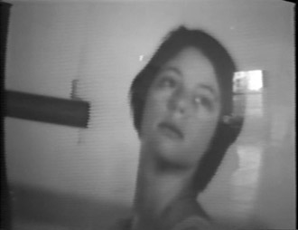

...
In the next three months, there are six events planned. Here they
are:
+++ Calendar . . .
Thursday, October 22

Joan Jonas, Glass puzzle (1973)
We are showing two films by Joan Jonas Next Door on starting at 6pm. The
total running time is 1 hour and 32 minutes.
The first film is Glass puzzle. This complex and enigmatic work,
which is performed by Jonas and Lois Lane, explores female gestures,
poses, the body and narcissism. Mirroring each other with synchronized
movements as they perform as alter-egos, Jonas and Lane reference
archetypal female gestures and poses from popular and traditional
cultures. Throughout the performance, space is dislocated and altered as
a formal device — segmented by a swinging bar, superimposed in layers.
With its evocative personal theater and idiosyncratic vocabulary of
gestures, ritual and symbolism, Glass Puzzle is a quintessential Jonas
work.
The second film, also by Jonas, will be a surprise. See you then.